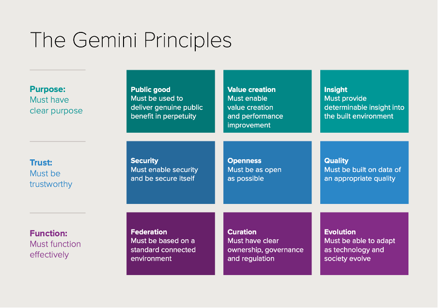
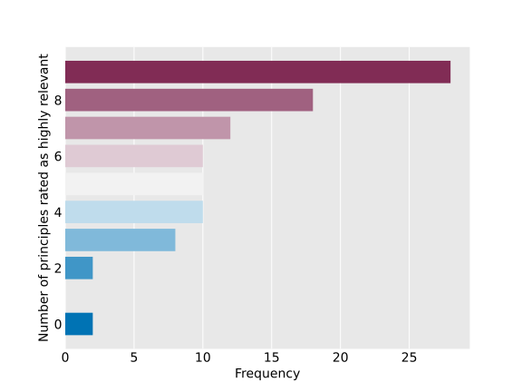
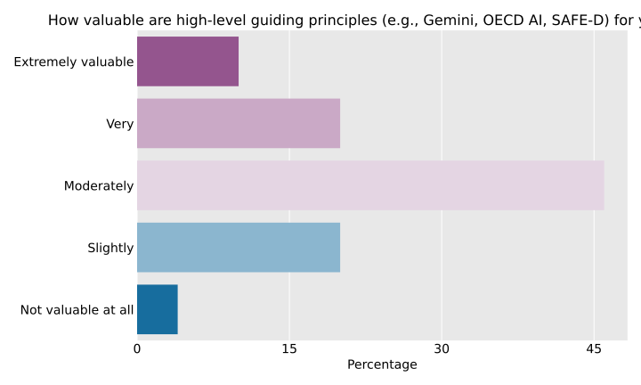
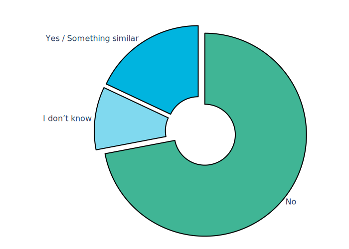

Analysis of Survey Results
In this section you will find our main analysis of the results gathered from the community pulse check. The analysis is presented across the following sections:
- Current Practices and Attitudes
- Evaluating the Gemini Principles
- Readines for Argument-Based Assurance
The analysis presented on this page is only a selection of the key results. However, other resources are available:
- To view our survey questions, please click here.
- To view the code used for this analysis (e.g. production of graphs), please click here.
- To view the thematic content analaysis of the free-text answers, please click here.
Current Practices and Attitudes
For this project, it was important to have a high-level understanding of the current assurance practices and attitudes within the DT community, alongside basic information about the community composition (e.g. sector) to help segment the findings. The findings in this section adress these topics.
Finding 1: High Adoption of Digital Twins Among Respondents
An unsurprising first finding (given the nature of the survey and its tageted community) is that 86% of respondents reported that they have established a digital twin, either directly or by supporting clients or providing components for digital twins. Despite the obvious selection bias, this high level of adoption indicates a mature and growing involvement with digital twin technology across the surveyed community.
However, the lack of a shared definition of what constitutes a digital twin means that respondents may vary in how conservative or liberal their interpretation is, potentially inflating the reported percentage. A recent report by the Committee on Foundational Research Gaps and Future Directions for Digital Twins et al. (2024) provides a comprehensive and expansive definition of digital twins, which may help build consensus, but this remains an open issue at present.
Finding 2: In-House Assurance Practices Prevail
The majority of respondents (68%) currently conduct assurance internally, with most relying on non-specialized teams for this process (see Figure 1). Only 6% of respondents use external services, such as third-party assurance providers, while 18% of respondents themselves are the provider of assurance services. This suggests a strong preference for in-house assurance, though often with limited specialisation.
Supply of assurance tools and techniques by third-party providers has also been raised recently in a report published by the UK Government’s Department for Science, Innovation, and Technology Department for Science (2024), suggesting that there could be a change in these practices as more diverse options become available.
{kind=link}
Finding 3: Assurance Focuses on Technical and Economic Performance
In our previous work, we had noted that a common goal for assurance practices was the safety or security of a system or technology Burr et al. (2024). However, in conducting this survey we were interested in whether assurance methods such as argument-based assurance (e.g. TEA, GSN) could help operationalise a broader set of principles—specifically the Gemini principles. We also wanted to see which goals or properties the community were currently assuring for digital twins.
As shown in Figure 2, respondents assure approximately seven or fewer properties of digital twins, focusing primarily on technical and economic performance. Societal properties, such as safety and trustworthiness, are assured to a lesser extent, with ethical, legal, and regulatory aspects being even less frequently addressed. Ecosystem integration properties, except for interoperability, were the least selected, highlighting gaps in broader assurance considerations.
{kind=link}
Finding 4: Varied Understanding of Assurance in Digital Twins
The understanding of the concept ‘assurance’ varied widely among respondents, as seen in the wordcloud depicted in Figure 3. Some focused on specific properties of digital twins (i.e. a specific target of assurance), while others emphasised the broader goal of increasing trust (i.e. the general goal of the process of assurance). We observed key themes around trust and confidence, as well as mention of validation, verification, or testing, For example:
- “We ensure a digital twin is having the impact anticipated and operating effectively.”
- “DT has been designed in accordance with requirements and is fulfilling them.”
- “Continuous validation and verification against real-world conditions.”
- “Verification and validation that the data is as intended.”
- “Independent validation of transparency, security, and trustworthiness in the data, processes, and purpose of the digital twin.”
Some responses mentioned specific goals such as accuracy, utility, privacy, and reliability. Notably, safety and compliance were less prominent. The diversity in responses indicates that assurance, as a structured process or methodology (e.g. argument-based assurance), is not yet a mature or consistently shared concept across the digital twin community.

Finding 5: Mixed Satisfaction with Assurance Practices and Communication
To explore how a new platform or approach to assurance (e.g. the TEA platform) would be perceived by the DT community, it was important to first understand the community’s attitudes towards their current assurance practices. As such, respondents were asked how satisfied they were with how their team identifies and documents requirements, actions, and decisions in their assurance process (see bottom bar of Figure 4). We also provided three statements related to assurance integration, communication, and alignment with higher-level principles:
- “The way we communicate our assurance activities significantly contributes to building and maintaining trust and confidence among our (or our client’s) stakeholders.”
- “We can clearly link specific assurance activities directly to higher-level principles guiding our (or our client’s) system’s trustworthiness and ethical standards.”
- “Our assurance activities extend beyond mere checklist compliance and are substantively integrated into our (or our client’s) operational processes.”
Respondents were asked to rate their level of agreement on a Likert scale from 1 (strongly disagree) to 5 (strongly agree). As we can see in the top three bars of Figure 4, respondents reported a high level of satisfaction with their assurance activities, particularly in the effectiveness of communicating assurance to build stakeholder trust. The majority also agreed that assurance activities are substantively integrated into operational practices and that these activities can be clearly linked to higher-level trustworthiness and ethical principles.
However, there was also a notable minority who disagreed with these statements, indicating variability in how assurance practices are perceived and implemented. This divergence may partly explain why 24% of respondents reported being unsatisfied with their overall assurance process.
{kind=link}
Evaluating the Gemini Principles
In addition to the current practices and attitudes, a further key motivation for this survey was to better understand the use and adoption of the Gemini Principles. Specifically, we wanted to understand how the community assessed the utility of these principles and whether there was operational value from the perspective of assurance.
The Gemini Principles, developed by the Centre for Digital Built Britain (CDBB), serve as a guiding framework for the development and implementation of digital twin initiatives across various sectors and domains. Born from a collaborative effort involving a diverse array of experts spanning various sectors, including academia, industry, and government, the Gemini Principles embody a collective vision for the future of digital infrastructure in the UK. Their creation was a strategic initiative designed to ensure that the evolution of digital twins and the broader digital built environment aligns with public interests, fosters innovation, and upholds the highest ethical standards.

Finding 6: High Relevance but Limited Practical Value of Guiding Principles
Respondents were first asked about their familiarity with, use of, and the perceived relevance of these principles. 64% of respondents had some level of familiarity with the principles, with 30% of this group actively using them as guidelines.1 The remaining respondents either had limited knowledge (i.e. “seen but not used”) or were introduced to the principles for the first time through the survey (Figure 5).
{kind=link}
When asked to rate the relevance of each principle, most respondents indicated that they found them “very” or “extremely relevant,” showing strong overall agreement on their importance. However, when assessing their practical value, responses were more mixed, with many considering the principles only “moderately valuable.” One may think that this suggests that while the principles are recognised as the right set of guidelines, they are not perceived as valuable in practice. However, it is important to note here that principles are insufficient to specify actions or practical decisions. Rather, principles are intended to play a contributory (but vital) role in a process of reflection and deliberation. As such, they are best viewed as starting points for a participatory approach of decision-making, rather than expecting them to serve as procedures for identifying practical actions or steps.


Finding 7: High Relevance Ratings Across All Principles
All of the Gemini principles were rated as either “Very” or “Extremely Relevant” by the majority of respondents, indicating a broad consensus on their overall importance. Among these, “Insight,” “Value,” and “Quality” were more often rated as “extremely relevant” compared to other principles, reflecting their particular significance within the community.
While this is a useful finding in its own right, but becomes more actionable when we consider it alonsgide the next finding.
{kind=link}
Finding 8: Mixed perceived Challenges across Principles
For all principles (except those rated as irrelevant), respondents were then asked to rate how challenging each principle was to implement. While “Moderately Challenging” was the most common response across all principles ==(not displayed below!)==, notable differences emerged in the more extreme ratings. For example, “federation” received the highest number of “extremely challenging” ratings, followed by “public good,”evolution” and “security.” In contrast, “insight” was the only principle never rated as “extremely challenging” and was generally seen as less challenging. Interestingly, the principles of “curation” and “openness” had symmetric extreme responses, with equal numbers finding them either not at all challenging or extremely challenging, possibly reflecting differences in sector or stages of digital twin adoption. This variability highlights the complexity of putting these principles into practice and warrants further exploration through in-depth interviews to understand the underlying reasons.
{kind=link}
Combining these responses with the results from the previous findings allows us to compare the principles along these two dimensions, as shown in Figure 8. Here it is easier to see that “quality” and “security”, relatively speaking, are possibly the most impactful to assure (or provide research support towards), given their high relevance and current perceived challenge in the community. In other words, these two principles are good candidates to be worked out further, as most practitioners would benefit from more specific and illustrative best practices in those areas.
{kind=link}
Finding 9: Mixed Interest in Connected Digital Twins and Challenges in Establishing Trust
Only about half (55%) of respondents reported considering sharing data or models with other organisations to build connected digital twins, which may explain why the “Federation” principle received relatively low relevance ratings. This suggests that not all digital twin practitioners are focused on creating connected digital twins (Bennett et al. 2023). Among those who did pursue connected twins, 67% found it difficult to establish trust in the resulting shared digital twin. The challenges reported included a broad range of issues, with the most common being intellectual property rights, data confidentiality, interoperability, and insufficient digital awareness. This indicates that for those who find “Federation” relevant, it is often perceived as highly challenging to implement.
{kind=link}
{kind=link}
Finding 10: Key Challenges in Implementing the Gemini Principles: Uncertainty, Lack of Standards, and Communication Barriers
The main challenges reported when putting the Gemini Principles into practice were categorised into four key themes:
- Not knowing how
- Communicating value
- Data Concerns
- Lack of consistency

The theme “Not knowing how” best encapsulates a sense of uncertainty among respondents, often reflecting an inability to determine where to begin or a lack of the necessary knowledge, including the absence of appropriate metrics or KPIs. This theme was especially prominent for principles like “Public good,” “Evolution,” and “Value,” highlighting that the digital twin space is still developing and that some sectors exhibit lower maturity when addressing these foundational concepts. For instance: - “It is not clear what public good in perpetuity would look like.” - “It is hard to objectively measure public good.” - “Terms are not well enough defined in our context.”
“Data Concerns” and “Lack of consistency” often co-occurred, encompassing issues ranging from specific data quality problems to broader challenges like the absence of consistent standards across the community. Examples include:
- “The acquisition of data on which digital twins are typically built is generally not standard in medical practice.”
- “Lack of standards and frameworks for data exchange among physical digital twins.”
Finally, the challenge of “Communicating value” was often linked to principles such as “Value,” “Openness,” and “Federation.” Respondents referred to the difficulty of establishing a shared understanding of a digital twin’s value among multiple stakeholders. Examples include:
- “Being able to communicate the value to their end user.”
- “Interoperability is a challenge (…) including getting partners to understand the opportunity and benefit at a system of systems level.”
These challenges demonstrate that while the Gemini Principles are recognized as important, there are still significant barriers to their implementation, with many sectors struggling to apply these high-level concepts effectively.
Readiness for Argument-Based Assurance
Finding 11: Interest in Tools but Uncertainty Remains
When asked about their readiness for a tool to support argument-based assurance, 48% of respondents indicated that such a tool would enhance trust in their digital twins by helping structure and communicate how assurance measures align with ethical goals. Another 38% expressed interest but required more information to fully understand its utility, while only 14% did not see the value of such a tool. Among those interested, common benefits mentioned were the potential for a more standardized approach, improved understanding of both the system and assurance process, and the ability to challenge or revisit assurance arguments. In contrast, those who were not interested in the tool often cited that it was not applicable to their work or did not align with existing communication practices with their stakeholders.
Finding 12: Lack of Established Frameworks for Trustworthy and Ethical Digital Twins
A significant gap was identified in the foundational understanding of digital twin ethics, with 72% of respondents indicating that their organizations lacked an established definition or framework for trustworthy and ethical digital twins. This highlights a lack of clarity in operationalizing ethical principles.

Finding 13: Gap in Structuring and Communicating Assurance Cases
The majority of respondents (64%) communicate their assurance work verbally during meetings, with 42% not using any structured approach for this communication. Only 30% use visual aids in their reports, demonstrating a clear gap in effectively structuring and conveying assurance cases across the industry. Although some respondents do follow established standards or use visual aids, further exploration is needed to better understand current practices and identify how TEA could support and integrate with these existing approaches.
{kind=link}
Finding 14: Value Demonstration and Skills Training Identified as Key Needs for Tool Adoption
When asked about the support needed to adopt the TEA tool and create assurance cases around ethical principles, the majority of respondents indicated that they would require a value demonstration to justify building an assurance case, emphasizing the need for a clear business justification. Additionally, a significant number of respondents highlighted their lack of expertise in implementing assurance tools as a major challenge, making skills training the second most requested form of support. A substantial number of respondents selected costs and lack of time as potential challenges, although those were chosen less frequently. The least frequently selected challenges were around internal resistance and integration with governance process or tech stack. Interestingly, community forums were the least requested support option, chosen by only 24% of respondents, suggesting a preference for more direct or formal methods of learning and engagement.
References
Footnotes
It is unclear how the Gemini principles are used as guidelines, as this was not directly asked during the survey or in any targeted follow-up.↩︎